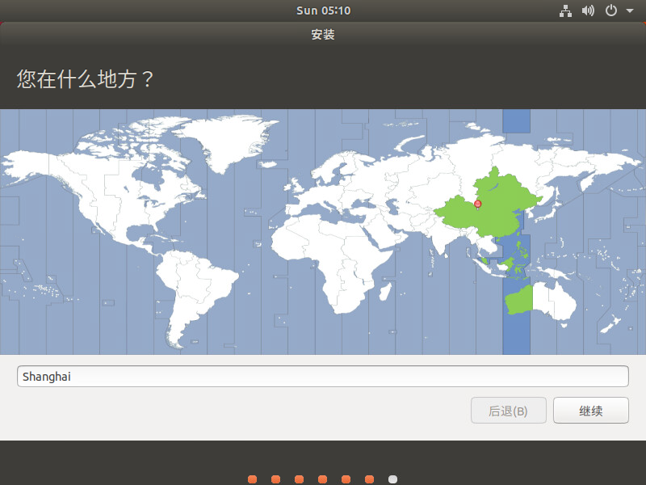
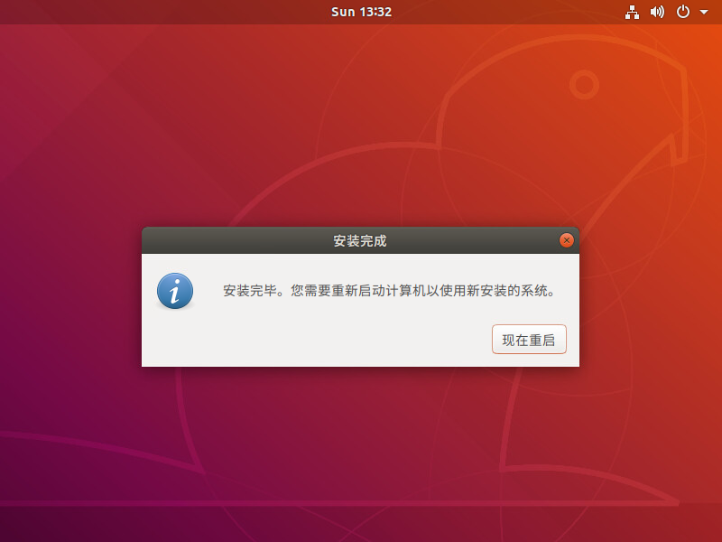
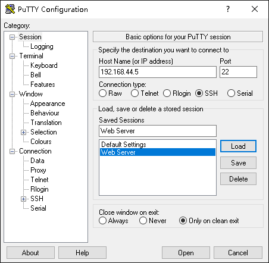
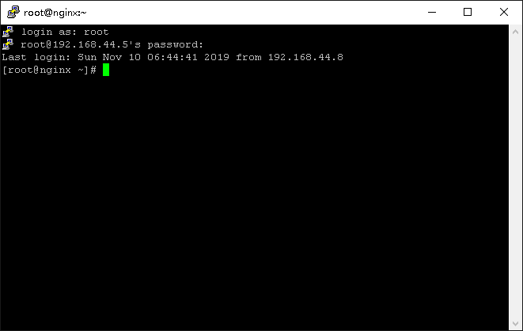

第一章 Linux 概述¶
1.1 认识Linux¶
操作系统¶
现在在我们的日常生活中，各种各样的软件为我们提供了丰富的功能。比如发送邮件、浏览网页、编辑视频或音频、编辑文档文件和管理日程安排等等。
计算机硬件分为很多种类，比如CPU、内存和硬盘等，而且其功能也各不相同。对于普通用户来说，计算机的结构非常复杂。普通用户并不具备直接操作计算硬件的能力，需要由程序来帮助普通用户使用计算机的硬件。
操作系统（以下简称“OS”）主要作用就是有效的利用各种硬件的功能与性能，使开发者或计算机操作者更容易开发应用程序或使用软件。但OS只提供运行硬件的基础功能，软件开发者可以在OS之上开发出各种功能丰富且易于使用的软件，让普通用户能够轻松的使用计算机来工作。
优秀的OS提高了开发人员的开发效率，同样也使得用户能够花费更少的精力学习使用所需的功能。
目前常见的OS代表有Linux、Microsoft Windows、macOS等。
OS的作用
OS由内核提供最基础的操作系统的功能，再加以一些具有各种功能的程序组成。内核可以管理所有硬件方面的资源调用，其包括利用CPU、管理内存、管理外部设备、管理机箱和中断硬件等。内核提供了各种各样的接口和库为开发者使用，所以开发者可以通过程序操作内核，而普通用户可以通过程序提供的服务来调用硬件资源。
应用程序种类
用户程序是指针对特定的用途而开发的软件，具体功能取决于用户用途。系统应用程序一般都是OS中包含的程序包组，它是由程序供应商打包在一起，通过委托开发或自行开发等制作和发布。
Linux操作系统构成
Linux操作系统由Linux内核、库和用户控制平台组成。

Linux系统¶
Linux系统的内核是为OS提供最基本功能的程序，例如CPU的调用、内存管理、进程管理等等。OS的启动是从Linux内核被读取后由内核引导系统开始的。
可加载模块
在系统启动后，内核模块根据程序的需要从磁盘读取到内核地址空间。由于在内核中针对各种厂商不同的网络硬件对应有不同的驱动器（控制硬件的程序），所以网络硬件模块作为可加载模块来提供。
库
库作为开发程序时所需函数的通用素材。在Linux中，系统提供了GNU开发的库，以及X.Org开发的X库。
X Window System
X Window System程序由X.Org组织开发的X服务和X客户端构成。在X Window System上，桌面环境得以以统一的设计和操作作为基础，为开发者提供了菜单、图标和后退回台窗口等服务。
程序开发环境
在程序开发所需的解释程序中，Linux系统可以提供Bash、Python、Perl语言等，作为编译器，可以提供C、C++、Java等开发环境。
服务程序
在Linux中可以提供各种各样的后台服务。例如，有ssh交换通讯数据的程序、提供打印机服务的程序等。
命令、实用程序
在桌面环境中，有提供文字处理和计算表格等办公工具套件（LibreOffice），具有高级功能图形编辑软件（GIMP）、Web浏览器（Chrome）、邮件工具（雷鸟邮件）、系统管理工具（系统监视器）等。另外，还为一般用户提供了用户管理、网络管理、数据库管理等用途的命令。
Linux发行版¶
1991年，自李纳斯.托瓦兹在互联网上公开了第一版Linux内核以来，Linux内核就吸引了众多开发人员参与其中并不断发展。
但是仅有Linux内核还不能称为OS，除此之外还需要有由源代码通过比较生成的可执行文件，程序可使用的程序库，为用户提供接口的Shell等诸多软件才能将Linux视为完整的OS，除此之外OS中还包含了从Shell启动的命令、工具，以及将它们安装到磁盘的安装程序。
企业、组织或个人可以为Linux内核集成上述软件并制作成OS进行发布（Distribute），所发布Linux系统被称为**发行版**(Distribution或Distro)。
在Linux操作系统中主要由免费软件和开源软件组成，下面我们简单描述Linux系统常见的软件类型：
自由软件
在GNU通用公共许可证（英语：GNU General Public License，缩写GNU GPL 或 GPL）下分发的软件称为“自由软件”，使用通用公共许可证编写的软件统称为自由软件。GPL的主要条件内容包括：
如果要发布编译源代码生成的二进制文件（可执行程序），则该源代码也必须公开。
可自由开发、变更、发布和使用。
使用GPL发布的软件为基础，再次进行开发和变更的软件也必须基于GPL发布
GPL的这一独特规定保证了软件可以再次分发，达到共享和发展软件目的。大多数Linux系统中的主要软件是在GPL下分发的免费软件。

开源软件
源代码要求公开，但再次分发自由的软件一般被称为“开源软件”。在开源倡议（Open Source Initiative:OSI）中，根据“开发源代码定义”（The Open Source Definition:OSD），规定了开源软件的主要条件内容如下：
允许再次分发
程序的可执行文件在发布时，必须也同时发布完整的源代码
如果对软件进行了修改，不必与修改前的代码使用同样的许可证
开源软件的规定变更了GPL中“以GPL为基础发布的软件、再次发布的变更软件必须同样使用GPL”这样的要求。
如果您修改了使用开源许可证进行分发的软件，您也可以通过其他许可证再次分发。在某些情况下，对于想要隐藏源代码的公司来说，这是一个易于采用的协议。
X.Org开发的X Window System软件为“MIT许可证”，Mozilla组织开发的Web浏览器Firefox为“MPL（Mozilla Public License）”，构成Linux系统的一部分软件也都以开放形式发布。

再造软件
再造软件在分发的情况下是不允许修改或复制的软件。发布者只提供二进制文件（可执行程序），不公开源代码。一般情况下，获取再造软件是收费的。Microsoft Windows和在其系统上运行的收费软件都是再造软件。
在一部分Linux发行版中，有时会包含再造软件。如果擅自将原程序软件复制散布，恐怕会涉及到著作权，所以需要注意。

Linux中的软件多是通过自由软件和开源软件的许可证发布的，可以自由地进行再次发布和变更。因此，现在有RedHat Enterprise Linux(RHEL)、CentOS（RHEL下游发行版）、Ubuntu、Debian/GNU Linux等数百种发行版。
用户可以考虑自己的喜好和使用目的，从中选择合适的版本。这也是Linux最大的特征之一。
内核、库、Shell和基本命令都是OS所必备的组件，在任何发行版中都是通用的（不同发行版所采用的软件版本可能会有所差异）。
各种Linux发行版最大的区别在于软件包的管理方式和桌面环境。
包管理器¶
包管理器的类别有RedHat系的rpm命令管理方式，Ubuntu/Debian系的dpkg命令管理方式，以及其他的方式。不同的包管理器所管理的软件包的封装格式也各有不同。
另外，从网络上的存储库安装、更新的方式中，有RedHat系的dnf（早期版本为yum）命令管理方式，Ubuntu/Debian系的apt命令管理方式，以及除此之外的其他方式。
存储库（Repoitory或Repo）是指软件包所在的存储位置。Linux系统通常使用在网络上的存储库，但也可以将本地DVD、CD-ROM或ISO镜像作为存储库。
RedHat系 |
Ubuntu/Debian系 |
|
|---|---|---|
包格式 |
rpm格式 |
deb格式 |
包管理命令 |
rpm命令 |
dpkg命令 |
利用存储库的包管理命令 |
dnf(yum)命令 |
apt命令 |
桌面环境¶
桌面环境提供了一套统一风格的易用性设计，其中包括菜单、文件管理器、Web浏览器、邮件工具和应用托管程序，以及系统管理程序。
现在，使用最为广泛的桌面环境是GNOME，但是还有很多其他独具特色的桌面环境。
Linux发行版可以根据其用途粗略分类为服务器和台式机，面向个人和面向企业。
发行版份额¶
在这里对各发行版的使用状况、以及Web服务器的市场占有率、开发平台的份额、云实例的份额为例进行介绍。
Web服务器
根据Q-Success公司运营的W3Techs.com调查，在运行Web服务器的Linux系统的市场占有率中，Ubuntu为第一位，Debian为第二位，CentOS（Redhat系）为第三位，接着是RedHat(Redhat Enterprise Linux:RHEL)，Gentoo等。

注解
W3Techs.com的调查是根据亚马逊的子公司Alexa Internet公司的Web流量的统计信息为基础进行分析。
开源云平台的市场占有率
在开源云平台OpenStack中，有RedHat、SUSE、NEC、IBM、富士通、华为等100多家公司参与了开发，并且此项目支持的企业超过500家。
在OpenStack平台中运行的Linux发行版市场份额为：CentOS位居第一，Debian为第二位，Fedora Server为第三位，接着是RedHat Enterpricse Linux(RHEL)，SUSE Linux Enterprise Server(SLES)等。

公有云实例份额
根据The Cloud Market(https://thecloudmarket.com)的统计数据，除在Amazon Elastic Compute Cloud(EC2)实例中运行的Amazon Linux AMI镜像（云上运行的虚拟OS），在EC2中的Linux操作系统类别中，Ubuntu位于第一位，Debian为第二位，Microsoft Windows是第三位。接下来是RedHat（RHEL)和CentOS(RedHat系)等。
发行版人气度¶
在记载了Linux发行版等开源操作系统信息的网站DistroWatch（https://distrowatch.com）中，可以看到为Linux发行版进行人气度排序的网页，面向个人配置的Linux Mint、elementary OS、Manjaro Linux等长久的排在了前几位。
注解
DistroWatch.com通过对使用同一IP地址访问Linux发行版网站每天的点击量进行排名统计。
发行版种类¶
我们可以将主要发行版分为企业用户、一般用户（RedHat系）、普通用户（Ubuntu/Debian）、通用用户（专有软件包管理分发）来介绍其特性。
面向企业的发行版
面向企业的代表性发行版有 RedHat Enterprise Linux （RHEL）和 SUSE Linux Enterprise Server （SLES）。其主要特征如下：
采用付费订阅协议（期限为1年、3年等），为企业提供了二进制文件（可执行程序）的发布、更新、支持、技术信息等服务。对于RHEL，如果没有预定合同，则无法获取二进制文件。SLES注册（免费）可获得试用版本。
由于程序包数量限定了支持范围，所以其软件的调试配置比面向一般用户的发行版的较少。
管理类的技术文档完善。
采用企业所需的高容量、高读写和高性能的文件系统。
对与高可用性集群、存储、统一认证和私有云等产品有需求的企业都可以在面向企业的发行版上获取服务
发行版
最新版本
最新版本发布日期
包管理器
标准文件系统
标准桌面环境
特征
RedHat Enterprise Linux
8
2019年5月
dnf
xfs
GNOME3
开发商：RedHat公司 1. 可以使用其他桌面环境，如KED、Xfce 2. 通过dnf命令使用存储库中的更新 3. dnf为新一代的rpm软件包管理器。dnf包管理器克服了dnf包管理器的一些瓶颈，提升了包括用户体验，内存占用，依赖分析，运行速度等多方面的内容。
SUSE Linux Enterprise Server
15
2018年7月
yum
Btrfs
GNOME3
开发商：EQT公司 1. 在ISO镜像中，除了服务器版本之外，还有SUSE Linux Enterprise Desktop 2. SUSE可以使用专有的GUI管理工具YaST 3. 通过SUSE独立的zypper命令（而非yum命令）更新存储库
面向一般用户（RedHat系）发行版
在面向一般用户的发行版中，一般将使用yum作为包管理器的发行版大致的归为RedHat系。
发行版
最新版本
最新版本发布日期
标准文件系统
标准桌面环境
特征
CentOS
8.0
2019年9月
xfs
GNOME3
开发商：CentOS项目 1. RedHat Enterprise Linux(RHEL)的复刻版本 2. 在RedHat公司的支持下，以RHEL为基础，除去了RedHat公司的Logo，开发CentOS项目
Scientific Linux
7.7
2019年8月
xfs
GNOME3
开发商：CERN、Fermilab 1. RedHat Enterprise Linux(RHEL)的复刻版本 2. 以RHEL的源代码为基础，除去了RedHat公司的Logo，CERN和Fermilab共同开发。
Fedora
31
2019年10月
ext4
GNOME3
开发商：Fedora项目 1. RHEL的开发版 2. 桌面环境还可以使用KDE、Xfce、MATE、Cinnamon、LXQt、LXDE和SOAS。
openSUSE
leap 15.1
2019年5月
Btrfs
安装时进行选择
开发商：openSUSE项目 1. openSUSE项目从2015年开始发行两种配置、Leap和Tumbleweed 2. Tumbleweed作为SLES的开发版本滚动更新，Leap是一个SLES作为基础发行。
面向一般用户（Ubuntu/Debian）发行版
在面向一般用户的发行版中，一般将使用dpkg作为包管理器的发行版大致归为Ubuntu/Debian系。
发行版
最新版本
最新版本发布日期
标准文件系统
标准桌面环境
特征
Ubuntu
19.04
2019年10月
ext4
GNOME3
开发商：Ubuntu项目 1. Canonical公司提供的Ubuntu项目以DebianGNU/Linux为基础进行开发 2. 通常每6个月发行一个新版本，支持周期为9个月，LTS（Long Term Support）是每两年发行一次，支持周期为5年 3. 桌面环境可以使用KDE、Xfce、LXDE和MATE
DebianGNU/Linux
10
2019年7月
ext4
安装时选择
开发商：Debian项目 1. 开发者遵循Debian社群契约及Debian自由软件指导方针，定义了开发Debian的基本承诺 2. 尊重GNU项目的精神，积极采用GNU开发的软件 3. 系统名称不是“Linux”而是“GNU/Linux”，发行版名称为“DebianGNU/Linux” 4. 软件包管理器dpkg于1994年有Debian项目的成员开发并发布 5. 在安装过程中，可以选择的桌面环境有：GNOME、Xfce、KDE、Cinnamon、MATE和LXDE
面向通用用户（专用软件包管理器）发行版
除了前面所述的RedHat系、Ubuntu/Debian系之外，一般将使用独立包管理器的发行版作为普通用户分类。
发行版
最新版本
最新版本发布日期
标准文件系统
特征
Gentoo Linux
滚动发布
Protage
开发商：Gentoo Foundation 1. 不属于RedHat系也不属于Debian/Ubuntu系的独立发行版 2. 软件不是二进制代码，而是需要通过源代码进行安装 3. 软件包管理系统Portage使用脚本编译源代码和安装软件包 4. 其用途是可以面向各种用途进行定制
Arch Linux
滚动发布
pacman
开发商：Aaron Griffin，其他 1. 不属于RedHat系也不属于Debian/Ubuntu系的独立发行版 2. 简便轻量 3. 使用安装ISO镜像进行安装操作，手动进行分区、文件系统的初始化和分类、安装包、编辑和配置文件 4. 包管理器是ArchLinux独有的pacman 5. 命令行界面（Command Line Interface） 6. 也可以从存储库中安装桌面环境
Manjaro
滚动发布
pacman
开发商：Manjaro团队 1. 基于ArchLinux的一般用户对用户友好的发行
注解
滚动发布版本不是发行版的版本号，而是按每个单独的程序包版本进行管理，它可以随时更新软件包。滚动发布的Linux发型版可以从官方网站下载定期更新的发行版安装镜像。
主要桌面环境¶
个发行版本的最大不同之一是采用的桌面环境配置不同，桌面环境的外观和操作方式不同。此外，每个桌面环境都有自己的模拟终端，您可以在其中运行Linux命令来执行操作系统的操作和管理。
以下是主要发行版中采用的桌面环境的示例（括号内是桌面环境）。


桌面环境 |
模拟终端 |
可使用的Linux发行版 |
特征 |
|---|---|---|---|
GNOME |
gnome-terminal |
大多数发行版，如CentOS和Ubuntu |
开发商：GNOME项目 1. GNOME最新版本为GNOME3 2. 在GNOME3中，将GNOME2中提供的GNOME Panel替换为GNOME-shell作为用户的图形界面，在操作性和设计上发生了很大的变化 3. GNOME-Shell被设计成适用于鼠标和键盘操作的大型的桌面PC，和使用键盘、鼠标、触控板外接屏幕操作的小型移动PC 4. GNOME3可以在登录时选择GNOME会话 |
KDE |
Konsole |
openSUSE、Ubuntu、CentOS等 |
开发商：KDE项目 1. 正式名称为K Desktop Environment 2. 使用QT工具包开发的桌面环境 3. 和GNOME一样，KDE可以在很多发行版中使用 |
Xfce |
xfce4-terminal |
Ubuntu、CentOS等 |
开发商：Xfce项目 1. 专为需要快速、轻便的桌面环境的用户而设计 |
LXDE |
lxterminal |
Ubuntu、Debian、Fedora等 |
开发商：LXDE团队 1. Lightweight X11 Desktop Environment 2. 为配置较低的PC设计的轻型桌面环境 3. 适用于配置较低老旧PC和轻薄笔记本，使用GTK工具包开发的桌面环境 |
LXQt |
qterminal |
openSUSE、Fedora等 |
开发商：LXQt团队 1. 与LXDE有相似的设计目标，使用QT工具包开发的桌面环境 |
Cinnamon |
gnome-terminal |
Mint、CentOS、Ubuntu等 |
开发商：Linux Mint团队 1. 从GNOME3的GNOME-Shell衍生出的桌面环境 2. 虽然是专为Linux Mint开发的桌面环境，但是现在可以在多个Linux发行版中使用 3. 外观与操作性与GNOME2相似 |
MATE |
mate-terminal |
CentOS、Ubuntu等 |
开发商：MATE团队 1. MATE是继承GNOME2的桌面环境 2. 虽然GNOME项目停止了对GNOME2的开发，但MATE继续支持GNOME2开发 3. 名字来源与南美的马特茶 |
Pantheon |
pantheon-terminal |
elementary OS |
开发商：elementary公司 1. elementary OS的桌面环境 2. 具有设计美观和操作简洁的特征 3. 基于GNOME软件组件构建而成 |
GUI和CUI操作¶
操作系统的操作方法分为两种：GUI操作与CUI操作。
GUI(Graphical User Interface)
使用鼠标在图形界面桌面上操作菜单或图标。
CUI(Character User Interface)
仅在显示器上显示文件，并通过键盘的输入进行操作。
在桌面环境中提供了不同的GUI工具，您可以通过鼠标来操作这些工具。作为CUI，每个桌面环境都提供了自己的模拟终端。您可以在这个模拟终端中使用键盘输入并执行Linux命令。大多数情况下，GUI工具无法完成细微的操作也可以使用命令来完成。
不同的桌面环境有不同的GUI工具，但是指令在几乎所有的发行版中都是相同的（有时也会因为命令所采用的版本不同有细微的差异）。
下面是使用桌面环境GNOME工具中（GUI）进行的操作的示例，以及在模拟终端中gnome-terminal中（CUI）执行等效操作的示例。


对于服务器（如DNS、Web或邮件），通常不需要安装桌面环境，或者安装了桌面环境也不使用。原因是当您通过网络管理设备时，您的桌面环境必定会增加网络传输的流量，而且也会消耗一定的性能。所以使用CUI来管理操作系统可以省去繁琐的操作流程与节省流量。

1.2 安装 CentOS¶
获取安装介质¶
要安装CentOS，请从官方网站上的列出的镜像网站链接处下载ISO镜像文件。CentOS官方网站的URL请参照以下内容：
注解
CentOS官方网站：https://centos.org
在官方网站上单击“Get CentOS Now”按钮。

CentOS根据不同的使用目的，提供不同的镜像下载。另外不同镜像初期安装的程序包也不相同。您可以在安装完成后添加或删除程序包，确保使用不同的镜像也同样可以构建相同的环境。
种类 |
使用目的 |
补充 |
|---|---|---|
CentOS Linux DVD ISO |
标准配置安装 |
标准安装镜像中用户可根据用途构建各种类型的配置 |
CentOS Stream DVD ISO |
滚动更新配置安装 |
CentOS Stream是一个滚动发行的发行版，它跟踪Red Hat Enterprise Linux（RHEL）开发之前的情况，它位于Fedora Linux和RHEL之间的中间位置 |
在本书中，您将使用“CentOS Linux DVD ISO”，点击“CentOS Linux DVD ISO”按钮，就会显示同步了CentOS存储库的镜像站的URL列表页面。下面我们开始对“CentOS-8-x86_64-1905-dvd1.iso”的安装步骤进行演示。
注解
ISO镜像版本会随时更新（本书使用的是1905）。安装及应用 CentOS-8（1905）须要最少2GB内存。我们推荐采用至少4GB内存。其他硬件条件要求，请参考以下URL: https://wiki.centos.org/zh/Manuals/ReleaseNotes
安装顺序¶
本书采用系统安装程序提供的默认安装方式，之后在每个章节都会提出需要附加的软件包与设置。
注解
需要使用VMware Workstations或Virtual Box在虚拟环境中安装CentOS时，请参照本书第十一章。
安装设备并启动
选择语言
选择要在安装过程中显示的语言。在图形界面的左边栏中选中【中文】，图形界面的右边栏中选中【简体中文（中国）】。然后点击【继续】。

安装信息摘要
在【安装信息摘要】中可以进行各种设定。从任何内容开始设定都可以。在本书中，在【安装目的地】、【网络和主机名】、【软件的选择】这三个地方进行设定。

安装目的地
网络和主机名
在【安装信息摘要】界面中，选择【网络和主机名】。系统安装完成后也可以变更，在这里通过DHCP实现网络的有效化和设置主机名。
在本书中，主机名为 “centos.localdomain” 。另外，将以太网设为【打开】。设置结束后，单击界面左上角的【完成】。

软件选择
在【安装信息摘要】界面中，选择【软件选择】。默认情况下是【带GUI的服务器】，因此启动时为GUI界面。在本书中，后续的演示是在GUI环境中进行操作。
选择【基本环境】中的【带GUI的服务器】，点击界面左上角的【完成】。

开始安装
完成设置后，单击【安装信息摘要】界面右下角的【开始安装】。

配置root密码与创建普通用户
安装结束后的配置


登陆¶
为了进行系统信息的确认和变更，使用root用户登录。

使用root用户登录，请在登录界面中点击【未列出】，然后输入用户名和密码。在本书中，root密码输入 “Linuxbasic2019” 。输入后，单击【登录】。

用户名：root
密码：Linuxbasic2019
登录后会显示初始设定界面。此时请进行汉语输入法的选择等初始设定。


出现【Getting Started】界面时，单击屏幕右上角的【否】关闭屏幕。如果显示桌面，则安装完成。

1.3 安装 Ubuntu¶
获取安装介质¶
如果你需要安装Ubuntu，请从官方网站上的列出的镜像网站链接处下载ISO镜像文件。Ubuntu官方网站的URL请参照以下内容：
注解
Ubuntu 的官方网站：https://www.ubuntu.com
Ubuntu的安装与CentOS等RedHat系Linux发行版的安装不同，它是通过复制被压缩的专用读取文件系统SquashFS文件的内容来进行安装的。因此，不需要在安装中选择部署目标，只要从官方网站的【Download】菜单中寻找ISO镜像种类的连接，根据部署目标（也有服务器版本的）选择进行下载。
种类 |
部署目标 |
补充 |
|---|---|---|
台式机 |
使用标准配置安装 |
面向一般用户，通过GUI安装；安装GNOME做桌面环境 |
服务器 |
使用最小配置安装 |
面向服务器用途，通过CUI安装；在安装过程中选择服务器所需软件 |
在本书中，使用“桌面”（Ubuntu Desktop）。下面详细说明使用“ubuntu-18.04-desktop-amd64.iso”的安装过程。
注解
目前 Ubuntu 的版本每六个月更新一次（本书使用的是“18.04”）。另外，要使用“Ubuntu-18.04-desktop”，最低配置需要2GB的内存。其他硬件条件请参考下方URL： https://www.ubuntu.com/download/desktop
安装顺序¶
本书采用系统安装程序提供的默认安装，在每个章节都会提出需要附加的软件包和设置。
注解
需要使用VMware Workstations或Virtual Box在虚拟环境中安装Ubuntu时，请参照本书第十一章。
启动安装程序
选择键盘布局
选择要安装的程序
选择安装类型
确认时区
如果界面显示“你在什么地方？”，输入地区，单击【继续】。在这里选择地区为【Shanghai】。
设置普通用户
在Ubuntu中root用户是禁止登录的，所以我们创建一个普通用户来进行登录。
在本书中，普通用户的用户名设置为“ubuntu”，有关普通用户设置的详细信息，请参考下方的表格。输入后，点击【继续】。

设置
内容
你的名字
ubuntu
主机名称
ubuntu.localdomain
输入用户名
ubuntu
输入密码
Linuxbasic2019
确认密码
Linuxbasic2019
安装完成
当显示【完成安装】是，界面右下角会显示【现在重启】。单击【现在重启】，重新启动系统。


{kind=link}
{kind=link}
{kind=link}
{kind=link}
{kind=link}
{kind=link}
{kind=link}
{kind=link}
{kind=link}
{kind=link}
{kind=link}
{kind=link}
{kind=link}
{kind=link}
{kind=link}
{kind=link}
{kind=link}
{kind=link}
{kind=link}
{kind=link}
{kind=link}
{kind=link}
{kind=link}
{kind=link}
{kind=link}
{kind=link}
登陆¶
登录到您创建的普通用户“ubuntu”，以便查看和更新系统信息。
要使用普通用户“Ubuntu”登录，选择“ubuntu”，然后输入密码。在本书中，“ubuntu”用户的密码为“Linuxbasic2019”。输入后，单击【登录】。
{kind=link}
用户名：ubuntu
密码：Linuxbasic2019
登陆后会显示初始设定画面。在本书中，不进行特殊的设定，请点击【下一步】或【完成】进入桌面。
{kind=link}
{kind=link}
{kind=link}
{kind=link}
显示【软件更新器】的界面。如果想要立即进行更新，请选择【立即安装】。在本书中，选择【稍后提醒】。
{kind=link}
出现桌面界面时，Ubuntu已经完成安装。
{kind=link}
1.4 系统的初始化设定¶
CentOS的初始化配置¶
如果您希望在基础安装的CentOS上更好的工作，需要进行如下的操作。
查看已安装包信息
进行更新
确认SELinux的状态并关闭
确认防火墙的状态并关闭
另外，后面的操作都是在命令行中进行说明，请启动虚拟终端。
从CentOS上方导航栏左侧点击活动，进入启动器界面，在左侧启动栏中找到终端图标，然后单击启动虚拟终端。

查看已安装包信息
在安装CentOS时，本书选择“带GUI的服务器”作为选择软件。这是根据使用目的功能组合的包组之一。
注解
有关包的详细信息，请参考第六章。
如果要显示包组的列表，执行`dnf groups list`即可。
# dnf group list 上次元数据过期检查：0:53:31 前，执行于 2019年11月17日 星期日 00时22分49秒。 可用环境组： 服务器 最小安装 工作站 虚拟化主机 定制操作系统 已安装的环境组： 带 GUI 的服务器 已安装组： 容器管理 无头系统管理 可用组： .NET 核心开发 RPM 开发工具 智能卡支持 开发工具 图形管理工具 ...省略...
要查看每个包组中包含哪些软件包，请在命令`dnf group info`命令中指定包组的名称。
# dnf groups info "带 GUI 的服务器" 上次元数据过期检查：0:55:58 前，执行于 2019年11月17日 星期日 00时22分49秒。 环境组：带 GUI 的服务器 描述：集成的易于管理的带有图形界面的服务器 no group 'dns-server' from environment 'graphical-server-environment' 必选软件包组： Common NetworkManager submodules Container Management Core Fonts GNOME Guest Desktop Agents Hardware Monitoring Utilities Hardware Support ...省略... 可选软件包组： Basic Web Server Debugging Tools FTP Server File and Storage Server Guest Agents Infiniband Support Mail Server ...省略...
进行更新
CentOS经常进行软件包的故障分析和功能改进，这些更新的软件包都是通过存储库提供的。通过存储库更新软件包可以使用`dnf update`命令。命令执行后将会注册存储库信息与当前已安装的软件包进行比较并校验差异，然后下载并安装需要更新的软件包。
注解
有关存储库的更多信息，请参考第六章。
dnf update 运行后会出现是否安装的确认信息，如果确认安装请输入`Y`或`y`。当所需更新的安装包安装完成后，将会显示“已完成”的信息。这样更新就结束了。
# dnf update 上次元数据过期检查：1:05:12 前，执行于 2019年11月17日 星期日 00时22分49秒。 依赖关系解决。 ==================================================================================================== 软件包 架构 版本 仓库 大小 ==================================================================================================== Installing: kernel x86_64 4.18.0-80.11.2.el8_0 BaseOS 424 k kernel-core x86_64 4.18.0-80.11.2.el8_0 BaseOS 24 M kernel-modules x86_64 4.18.0-80.11.2.el8_0 BaseOS 20 M Upgrading: ...省略... 完毕！
确认SELinux的状态并关闭
SELinux是具有对安全管理者以外的用户不能变更的强制的访问控制方式和对每个进程的文件等资源的访问进行限制的Type Enforcement，以及限制包括root在内的所有用户的角色的卷库访问控制和功能。
应为可以加强系统的安全性，所以在互联网中的服务器运用方面有好处，但是在可以信赖的内部网络环境中的使用、以及作为开发环境和测试环境使用时，也有关闭的情况。在这里，将介绍关闭SELinux的一种方法。
SELinux具有以下三种状态：
SELinux状态
说明
enforcing
生效状态
permissive
无效状态，但SELinux日志处于记录状态
disabled
无效状
要检查SELinux当前的状态，请执行`genenforce`命令。要确认更详细的信息，请执行`sestatus`命令。
# getenforce ➜ 查看SELinux当前状态 Enforcing ➜ SELinux生效 # sestatus ➜ 查看SELinux更详细的内容 SELinux status: enabled SELinuxfs mount: /sys/fs/selinux SELinux root directory: /etc/selinux Loaded policy name: targeted Current mode: enforcing Mode from config file: enforcing Policy MLS status: enabled Policy deny_unknown status: allowed Memory protection checking: actual (secure) Max kernel policy version: 31
要禁用SELinux，请执行以下的操作：
临时禁用
如果需要临时（在系统重启前生效）禁用SELinux，在`setenforce`命令后追加`0`。
# getenforce ➜ 查看SELinux当前状态 Enforcing ➜ SELinux生效 # setenforce 0 ➜ 关闭SELinux # getenforce ➜ 查看SELinux当前状态 Permissive ➜ SELinux关闭
永久禁用
如果需要永久禁用SELinux，在`/etc/selinux/config`文件中的以“SELINUX”开头的所在行中将“enforcing”修改为“permissive”或“disabled”并重启系统。在下面的示例中，您已经将配置文件中“permissive”修改为“disabled”。更改后，通过`reboot`命令重启系统。
请注意，在这个示例中，通过vi编辑器来编辑文件。
注解
有关vi命令的内容，请参考第三章。
# vi /etc/selinux/config ...以下为vi编辑器显示内容... # This file controls the state of SELinux on the system. # SELINUX= can take one of these three values: # enforcing - SELinux security policy is enforced. # permissive - SELinux prints warnings instead of enforcing. # disabled - No SELinux policy is loaded. #SELINUX=enforcing ➜ 注释此行，在行首添加#号 SELINUX=disabled ➜ 添加此行 # SELINUXTYPE= can take one of these three values: # targeted - Targeted processes are protected, # minimum - Modification of targeted policy. Only selected processes are protected. # mls - Multi Level Security protection. SELINUXTYPE=targeted ...编辑结束... # reboot
确认防火墙状态并关闭
防火墙是组织来自网络的未经授权的访问机制。在导入时，只允许访问特定的端口号。
互联网上的服务器操作等是必须的功能，但与SELinux一样，在作为可靠的内部网络的使用、开发环境和测试环境中使用时，您可能需要禁用该选项。本节介绍如何禁用防火墙。
Linux的防火墙功能是由内核模块Netfilter提供的。从CentOS6到CentOS7为止的设定使用程序是iptables。CentOS8中则使用的是nftables。nftables是新的数据包分类框架，新的linux防火墙管理程序，旨在替代现存的 {ip,ip6,arp,eb}_tables。它拥有一些高级的类似编程语言的能力，例如定义变量和包含外部文件，即拥有使用额外脚本的能力。CentOS8同样可以使用firewalld管理防火墙。
> firewalld 提供了多个不同的安全强度设置模板，称为“区域”，通过选择符合您要连接的网络的可靠性的区域，可以方便的设置。有关firewalld更多的信息，请参考第十章。
现在的防火墙的状态，使用firewalld命令确认。默认情况下，只允许cockpit、ssh和DHCPv6客户端。
# firewall-cmd --list-service --zone=public cockpit dhcpv6-client ssh
要停止防火墙，请运行systemctl命令。
# systemctl stop firewalld.service # firewall-cmd --list-service --zone=public ➜ 检查防火墙 FirewallD is not running
运行上述命令，您可以停止运行防火墙，但在重启系统后，firewalld将自动启动。要避免重启后防火墙自动启动，请执行以下命令：
# systemctl disable firewalld.service Removed /etc/systemd/system/multi-user.target.wants/firewalld.service. Removed /etc/systemd/system/dbus-org.fedoraproject.FirewallD1.service.
Ubuntu初始化设定¶
在使用Ubuntu的基础上，记载了是要做好的工作。进行操作如下：
确认已安装包的信息
进行更新
确认AppArmor的运行状态
检查防火墙的状态
另外，为了在命令行中说明后面的操作，先启动虚拟终端。
在Ubuntu的桌面上，点击【显示应用程序】图标，滚动表所示的图标一览表，选择【终端】。


确认已安装包的信息
要查看系统中已经安装的所有软件包，请使用dpkg命令。
注解
有关包的详细信息，请参考第六章。
# dpkg -l | more 期望状态=未知(u)/安装(i)/删除(r)/清除(p)/保持(h) | 状态=未安装(n)/已安装(i)/仅存配置(c)/仅解压缩(U)/配置失败(F)/不完全安装(H)/触发器等待(W)/触发器未决(T) |/ 错误?=(无)/须重装(R) (状态，错误：大写=故障) ||/ 名称 版本 体系结构 描述 +++-==========================================-============================================-============-=============================================================================== ii accountsservice 0.6.45-1ubuntu1 amd64 query and manipulate user account information ii acl 2.2.52-3build1 amd64 Access control list utilities ii acpi-support 0.142 amd64 scripts for handling many ACPI events ii acpid 1:2.0.28-1ubuntu1 amd64 Advanced Configuration and Power Interface event daemon ii adduser 3.116ubuntu1 all add and remove users and groups ii adium-theme-ubuntu 0.3.4-0ubuntu4 all Adium message style for Ubuntu ii adwaita-icon-theme 3.28.0-1ubuntu1 all default icon theme of GNOME (small subset) ii aisleriot 1:3.22.5-1 amd64 GNOME solitaire card game collection ...省略...
进行更新
Ubuntu经常进行故障修复和功能改善，它们是通过存储库提供的。首先更新在本地管理的包索引后，更新session。
注解
关于存储库的更多信息，请参考第六章。
运行`sudo apt update`命令可以更新本地软件包索引。运行时，将显示可更新的软件包的数量。
$ sudo apt update [sudo] ubuntu 的密码： 命中:1 http://cn.archive.ubuntu.com/ubuntu bionic InRelease 获取:2 http://security.ubuntu.com/ubuntu bionic-security InRelease [88.7 kB] 获取:3 http://cn.archive.ubuntu.com/ubuntu bionic-updates InRelease ...省略... 获取:19 http://cn.archive.ubuntu.com/ubuntu bionic-backports/universe amd64 DEP-11 Metadata [7,976 B] 已下载 1,950 kB，耗时 14秒 (136 kB/s) 正在读取软件包列表... 完成 正在分析软件包的依赖关系树 正在读取状态信息... 完成 有 209 个软件包可以升级。请执行 ‘apt list --upgradable’ 来查看它们。
然后执行`sudo apt upgrade`命令进行软件包的升级更新。在安装前会出现“是否安装”的确认提示，确认安装请输入“Y”或“y”。这样更新就结束了。
$ sudo apt upgrade 正在读取软件包列表... 完成 正在分析软件包的依赖关系树 正在读取状态信息... 完成 正在计算更新... 完成 下列【新】软件包将被安装： ...省略... 升级了 209 个软件包，新安装了 5 个软件包，要卸载 0 个软件包，有 0 个软件包未被升级。 需要下载 225 MB/386 MB 的归档。 解压缩后会消耗 332 MB 的额外空间。 您希望继续执行吗？ [Y/n] y ➜ 输入【y】 ...省略...
确认AppArmor状态
在Ubuntu中，AppArmor比SELinux更容易设置，以增强系统的安全性。以程序为单位进行强制访问控制。
要进行AppArmor的状态确认，运行systemctl命令。从以下的执行结果可知启动中（Active）。本书将保持有效。
$ systemctl status apparmor.service ● apparmor.service - AppArmor initialization Loaded: loaded (/lib/systemd/system/apparmor.service; enabled; vendor preset: enabled) Active: active (exited) since Sun 2019-11-17 13:34:04 CST; 2h 26min ago Docs: man:apparmor(7) http://wiki.apparmor.net/ Main PID: 433 (code=exited, status=0/SUCCESS) Tasks: 0 (limit: 4646) CGroup: /system.slice/apparmor.service ...忽略...确认防火墙状态
在Ubuntu中，安装时不包含firewalld，如果要使用，请运行`apt install firewalld`命令进行安装。默认情况下，提供了一个名为“ufw”（Uncomplicate FireWall）的命令。
要查看防火墙的当前状态，请运行`sudo ufw status`命令。在下面的执行结果中，您可以看到它处于非互动状态（已停止）。本文档将保持非活动状态。
$ sudo ufw status 状态：不活动
注解
有关ufw命令的详细信息，请参考第十章。
1.5 通过 SSH 远程登录¶
远程登录¶
从本地主机（用户直接登录的主机）登录到网络上的其他主机（远程主机），将其称为远程登录。
{kind=link}
远程登录的指令有很多。
telnet
telnet命令可以在远程主机上运行telnet服务时使用。当您访问远程主机时，就会和登录本地主机时一样发生登录认证。因此输入在远程主机上设定的用户名和密码。另外，由于通信内容是普通文本（明文），所以如果通信线路被窃听的话，就可以很容易地明确账号和密码。
ssh
ssh命令和telnet命令一样，是可以登录到远程主机的命令，访问远程主机时，登录验证将与登录到本地主机时一样。但是，与telnet不同，使用公钥密码对所有包含密码的通信内容进行加密。
注解
关于公钥密码信息，请参考第十章。
ssh命令是免费安装的OpenSSH客户端命令，服务器是sshd。OpenSSH由OpenBSD项目开发。
确认sshd启动¶
本书介绍ssh进行远程登录。另外，在登录目标的主机（服务器）中，由于以sshd启动为前提，所以确认CentOS以及Ubuntu中的sshd的启动不存在。
CentOS的sshd
在CentOS中，sshd已经安装完毕，并且开机自动启动，因此没有服务器端设置。
# systemctl status sshd ● sshd.service - OpenSSH server daemon Loaded: loaded (/usr/lib/systemd/system/sshd.service; enabled; vendor preset: enabled) Active: active (running) since Sun 2019-11-17 00:15:00 EST; 3h 11min ago Docs: man:sshd(8) man:sshd_config(5) Main PID: 1126 (sshd) Tasks: 1 (limit: 23619) Memory: 4.6M CGroup: /system.slice/sshd.service └─1126 /usr/sbin/sshd -D -oCiphers=aes256-gcm@openssh.com,chacha20-poly1305@openssh.com,aes256-ctr> ...忽略...另外，sshd在初始设定中使用22号端口。远程登录时，除了远程主机名之外，还提供了访问此端口号所需的信息。
# netstat -tlnp Active Internet connections (only servers) Proto Recv-Q Send-Q Local Address Foreign Address State PID/Program name tcp 0 0 192.168.122.1:53 0.0.0.0:* LISTEN 2568/dnsmasq tcp 0 0 0.0.0.0:22 0.0.0.0:* LISTEN 1126/sshd tcp 0 0 127.0.0.1:631 0.0.0.0:* LISTEN 8018/cupsd tcp 0 0 0.0.0.0:111 0.0.0.0:* LISTEN 1/systemd tcp6 0 0 :::22 :::* LISTEN 1126/sshd tcp6 0 0 ::1:631 :::* LISTEN 8018/cupsd tcp6 0 0 :::111 :::* LISTEN 1/systemd
Uubuntu的sshd
由于在Ubuntu中没有安装sshd，所以运行以下命令进行安装。
注解
sshd被提供为openssh-server程序包。有关软件包的更多信息，请参考第六章内容。
$ dpkg -l | grep openssh-server $ ➜ 确认OpenSSH未安装 $ sudo apt install openssh-server ➜ 安装 [sudo] ubuntu 的密码： 正在读取软件包列表... 完成 正在分析软件包的依赖关系树 正在读取状态信息... 完成 ...省略... 您希望继续执行吗？ [Y/n] y ➜ 输入【y】
安装完成后，请检查sshd的状态。在下面的执行结果中，您可以看到它是启动（Active）的。
$ sudo systemctl status sshd ● ssh.service - OpenBSD Secure Shell server Loaded: loaded (/lib/systemd/system/ssh.service; enabled; vendor preset: enabled) Active: active (running) since Sun 2019-11-17 15:40:49 CST; 56min ago Main PID: 4814 (sshd) Tasks: 1 (limit: 4646) CGroup: /system.slice/ssh.service └─4814 /usr/sbin/sshd -D ...忽略...
ssh远程登录¶
那么，从本地主机（客户端）进行远程登录。由于CentOS和Ubuntu的方法都是相同的。所以在此记载CentOS的运行结果。
ssh命令示例
如果本地主机（客户端）是Linux，请使用ssh命令。例如，在以下前提下执行：
客户端的主机名为“centos-1.localdomain”，服务器的主机名为“centos-2.localdomain”
客户端的IP地址为“10.0.2.16”，服务器的IP地址为“10.0.2.15”
客户端主机以“centos”的身份登录
作为“centos”远程登录到服务器主机
首先，请先看示例一。ssh命令后，指定主机名。由于省略了用户名，因此使用客户端的当前用户名（在此为“centos”）。此外，首次连接到主机时，OpenSSH将显示一条警告信息，如果出现警告，请输入“yes”。
如上述示例所示，登录成功，操作结束后注销登录。要注销，请运行`exit`命令。
接下来，请看示例二。也可以指定IP地址而不是主机名。另外，登录时指定用户名时，指定为“-l 用户名”。
[centos@centos-2 ~]$ ssh -l centos 10.0.2.15 ...省略...
> 示例中的centos@centos-2提示意味着用户centos已经登录到主机centos-2。此外，“#”表示当前用户为root，“$”是以普通用户身份登录的，相关内容请参考第三章。
从Windows远程登录到Linux主机
由于Microsoft Windows中（根据使用的版本不同）不包含SSH客户端，所以提供了几个用于Windows的SSH客户端，包括免费、商用。如果导入这些的话，可以通过SSH从Windows远程操作Linux主机。在本书中，将对Windows中使用的SSH客户端之一的PuTTY的使用方法进行说明。
注解
PuTTY是一款集成虚拟终端、系统控制台和网络文件传输为一体的自由及开放源代码的程序。它支持多种网络协议，包括SCP，SSH，Telnet，rlogin和原始的套接字连接。它也可以连接到串行端口。其软件名字“PuTTY”没有特殊含义。更详细的内容请参考下方的URL： https://www.putty.org/
启动PuTTY
双击桌面“PuTTY”快捷方式，当桌面没有快捷方式时，请从开始菜单启动。
指定目标
运行 PuTTY 就可以看到如下界面：
在“Host Name(or IP Address)” 框内输入服务器的 IP 或主机名，选择SSH协议，SSH 协议默认端口为22，如果你修改了 SSH 协议的端口号，记得修改此处端口号。如果希望把这次的输入保存起来，方便以后再次登录，可以在“Saved Sessions”框内输入会话保存的名称，比如“Web Server”，之后点击保存即可。
最后点下面的 “Open” 按钮，输入正确的用户名和密码，就可以登录服务器了。首次登录一台主机时会看到这个安全告警的对话框：
这是要告诉你登录的主机密钥指纹，点“是”就保存起来，以后就不会再弹出这个窗口，然后就正常登录。点击“否”不保存，下次登录还会弹出这个对话框，但是也可以正常登录。点击“取消”则取消此次登录。

{kind=link}
{kind=link}
{kind=link}
{kind=link}
{kind=link}